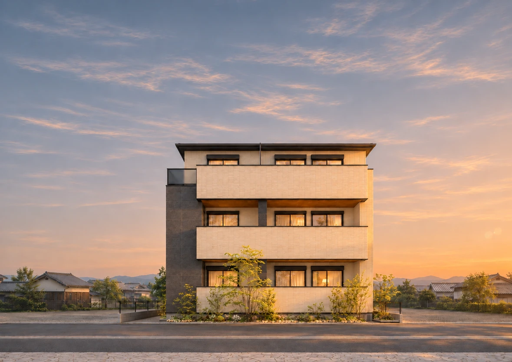
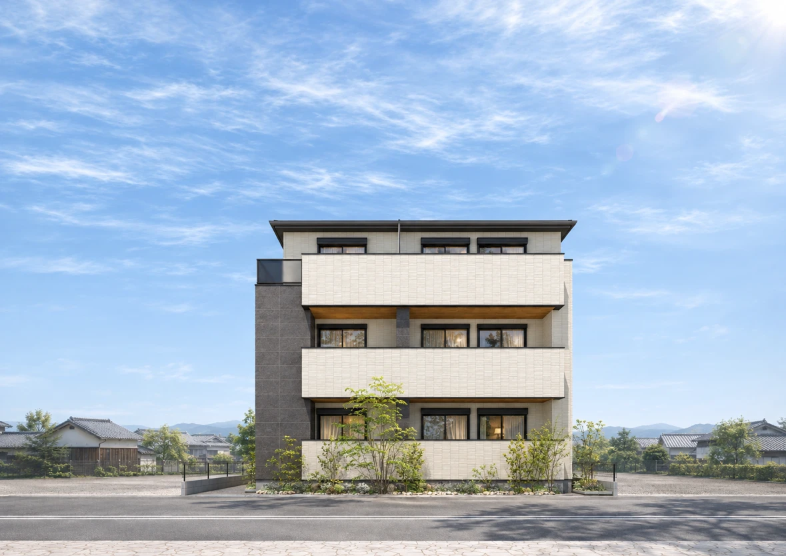
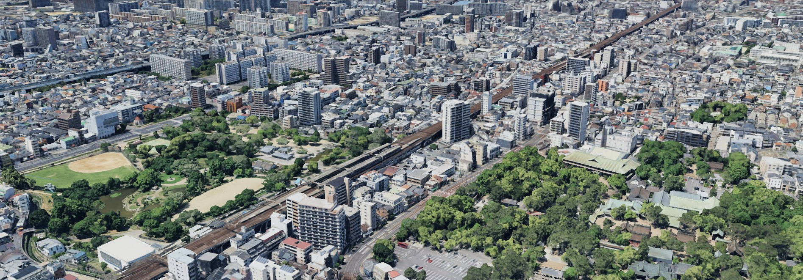
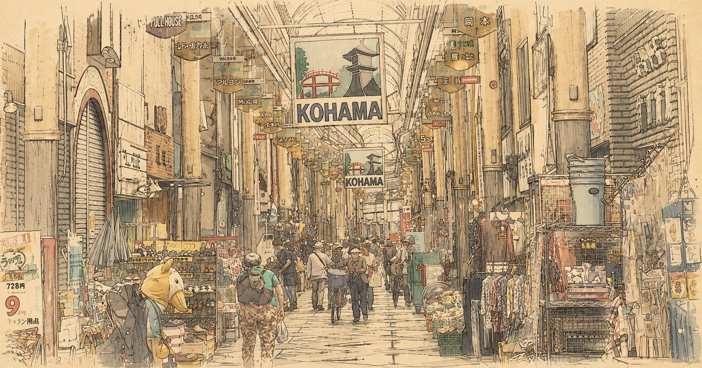

OSAKA / SUMINOE / KOHAMA人の流れに、
人の流れに、
暮らしを結ぶ。
街と、日々と、これからを。
PRIVATE RESIDENCE PROPOSALSCROLL ↓
01 / CONCEPT街に寄り添い、
街に寄り添い、
自分らしく暮らす。
古くから人が行き交い、暮らしが積み重なってきた粉浜。その街の流れに寄り添いながら、これからの暮らしを結ぶ住まいを提案します。
都市へのアクセスと、日常の心地よさ。働く時間と、くつろぐ時間。そのどちらも大切にできる1LDKの住まいです。
02 / ARCHITECTURE縦と横が織りなす、
縦と横が織りなす、
印象的な佇まい。
水平に伸びるバルコニーと、垂直に走るアクセントライン。縦と横のコントラストが、端正で印象的なファサードをつくります。木調の軒裏が、その表情にぬくもりを添えます。

03 / LOCATION都市をつなぐ、
都市をつなぐ、
心地よい距離感。
南海本線「住吉大社」駅 徒歩5分。
商店街のある街で、日常を豊かに。
5min
住吉大社駅まで徒歩
住吉大社駅まで徒歩

LOCAL LIFE街の営みが、
街の営みが、
暮らしのそばに。
商店街を行き交う人々。日々の買い物や、帰り道のひととき。身近な街の営みが、毎日の暮らしを彩ります。
04 / INTERIOR帰る時間が、
帰る時間が、
楽しみになる。
木のぬくもりと、やわらかな光。
何気ない一日の終わりを、心地よい時間へ。
01 / 04
05 / PLAN
暮らしの余白を、一つの住まいに。
全12世帯、1LDK。37.78㎡から42.49㎡までの住戸計画。
12RESIDENCES
1LDKROOM PLAN
3FLOORS
図面をタップして拡大 ※計画段階の図面です。
06 / PROJECT DATA
計画概要。
（仮称）住之江区粉浜3・新築計画
- 計画地
- 大阪市住之江区粉浜3丁目
- 規模
- 3階建 / 1棟12世帯 / 1LDK
- 敷地面積
- 304.70㎡（92.17坪）
- 建築面積
- 191.42㎡（57.90坪）
- 1階床面積
- 183.73㎡（55.57坪）
- 2階床面積
- 188.03㎡（56.87坪）
- 3階床面積
- 183.63㎡（55.54坪）
- 延床面積
- 555.39㎡（167.98坪）
- 施工床面積
- 628.67㎡（190.17坪）
- 住戸面積
- 37.78〜42.49㎡
KOHAMA 03この街に、